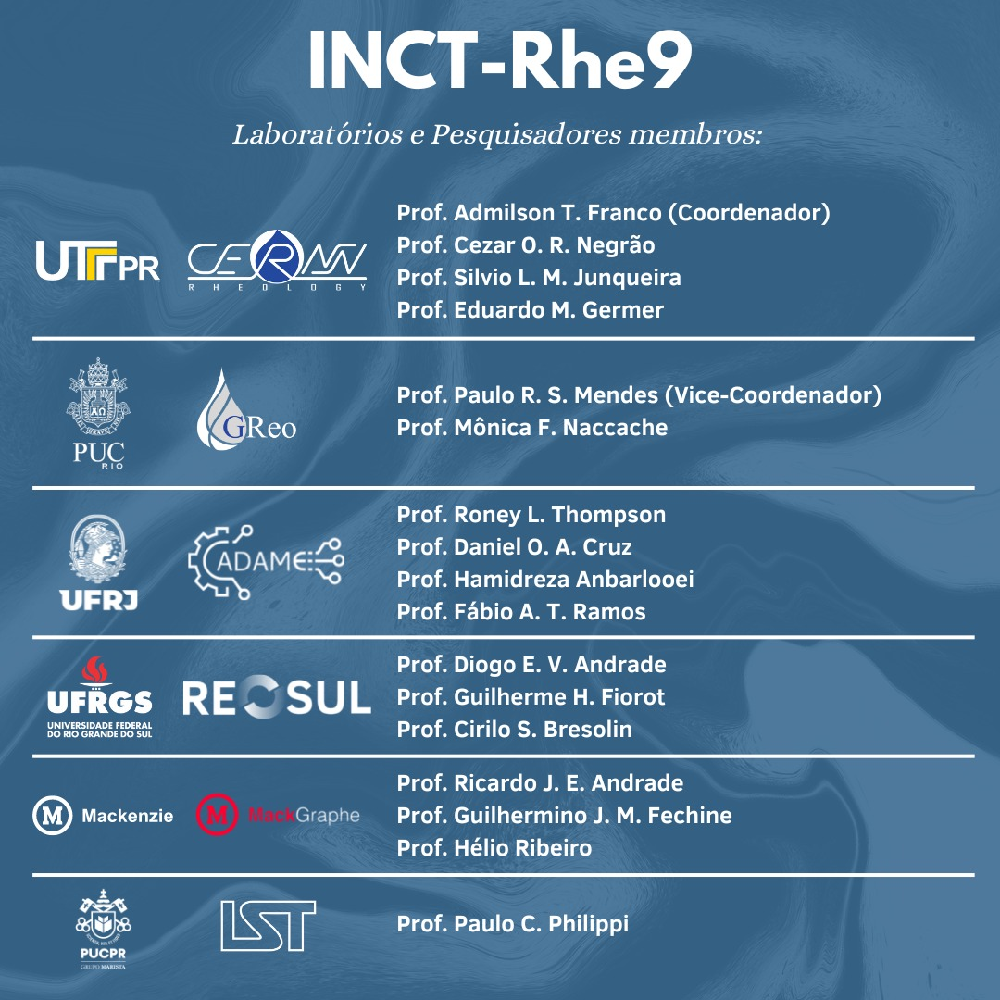

Rheology of Complex Materials Applied to Advanced Technologies (INCT-Rhe9)
The L'CADAME represents UFRJ in the CNPq-INCT (National Institute of Science and Technology) project titled: "Rheology of Complex Materials Applied to Advanced Technologies (INCT-Rhe9)". The project is the result of a collaboration initiative involving groups from different leading universities in the field of Rheology. The objective is to develop solutions using new materials and technology with a focus on strategic areas such as energy and the environment. Examples of applications addressed by the project include nanotechnology in solar collectors, electric battery pastes, recycled and biodegradable polymers, CO2 capture from hydrates, as well as the use of smart materials in the petroleum industry processes. Due to its experience and history in high-performance computing, L'CADAME will concentrate the computational facilities related to INCT-Rhe9.
O L’CADAME representa a UFRJ no Projeto INCT-CNPq (Instituto Nacional de Ciência e Tecnologia) intitulado: Reologia de materiais complexos aplicada a tecnologias avançadas (INCT-Rhe9). O projeto é fruto de uma iniciativa de colaboração de grupos de diferentes universidades expoentes na área de Reologia. O objetivo é desenvolver soluções a partir de novos materiais e tecnologia com foco na em áreas estratégicas como energia e meio ambiente. Nanotecnologia em coletores solares, pasta de baterias elétricas, polímeros reciclados e biodegradáveis, captura de CO2 a partir de hidratos, além da utilização de materiais inteligentes em processos da indústria do petróleo são exemplos de aplicações abordadas pelo projeto. Pela sua experiência e história com computação de alto desempenho, o L’CADAME concentrará as facilidades computacionais ligadas ao INCT-Rhe9.
